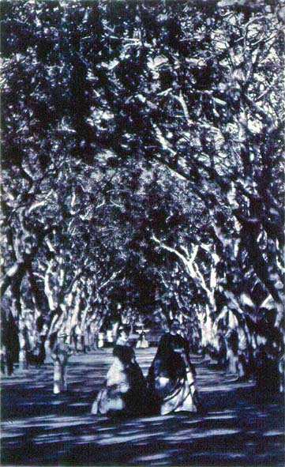

|
Nature
|
|  |
| Revert Henrique Klumb, Senhoras no Jardim Botânico |
Welcome to the guided tour "nature", which is about to depart! Please use the "back" and "forward" buttons below to take you through this part of the exhibition. Click on the images if you want to find out more about an exhibit, or if you want to see a larger image of it.
Drawing on the writings of Alexander von Humboldt and other European scientific travellers of the late eighteenth and early nineteenth century, American nature provided Creole nationalists of the young South American republics with the one of the most potent and long-standing sources of a national iconography. Brazil, which unlike its neighbours had achieved independence through peaceful dynastic secession and the creation of a national monarchy, nonetheless also called on the tradition of romantic naturalism when attempting to craft an image of the nation-state as an organic totality. Museums of natural history, in the 1810s and 1820s, were among the first state-funded institutions, often preceding the foundation of universities and emerging simultaneously as the state´s political institutions: bringing nature into the frame of a 'national' representation was seen as crucial to maintaining the claim to national sovereignty. Collecting and exhibiting 'nature', then, as well as the depiction and canonisation of a 'national landscape' in the fine arts and the –cartographic as well as allegorical– definition of national territory, were immediately political forms of translating the state into a 'natural order' (and vice versa): indeed, to follow the construction of 'nature' in the arts and sciences, and even in the 'landscaping' of parks and botanical gardens in the national and provincial capitals, is a way of narrating the cultural history of the state form in Latin America; a history in which the 1880s were a crucial moment of iconographic formalisation.
|
[ Back to index | Forward ] |